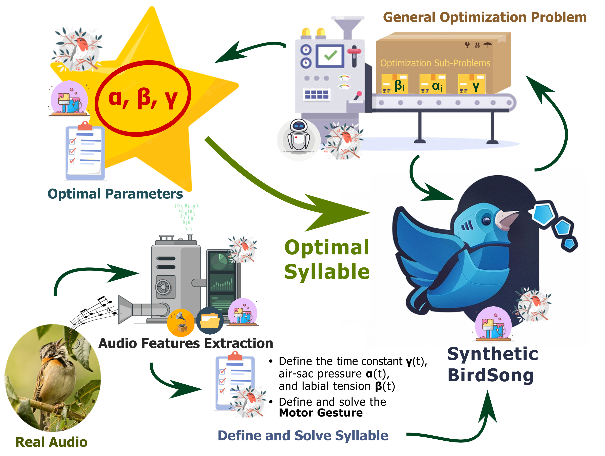

Design, development, and evaluation of a computational-physical model for generating synthetic birdsongs from recorded samples.
Overview
This study involves the Python implementation of the motor gestures for birdsong model developed by Professor G. Mindlin. This model explains the physics of birdsong by simulating the organs involved in sound production in birds, including the syrinx, trachea, glottis, oro-esophageal cavity (OEC), and beak, using ordinary differential equations (ODEs).
This work presents an automated model for generating synthetic birdsongs that are comparable to real birdsongs in both spectrographic and temporal domains. The model uses the motor gestures approach and an audio recording of real birdsong as input. Automation is achieved by formulating a minimization problem with three control parameters: air sac pressure of the bird’s bronchi, labial tension of the syrinx walls, and a time scale constant. This optimization problem is solved using numerical methods, signal processing tools, and numerical optimization techniques. The objective function is based on the Fundamental Frequency (also called pitch, denoted as FF or F0) and the Spectral Content Index (SCI) of both the synthetic and real syllables.
The package is tested and evaluated on three different Colombian bird species: Zonotrichia capensis, Ocellated Tapaculo, and Mimus gilvus. Recorded samples are downloaded from Xeno-Canto and eBird audio libraries. The results show relative errors in FF and SCI of less than [specific percentage], with comparable spectral harmonics in both number and frequency, as detailed in the Results section.
A schematic description of the motor gestures model for birdsongs, illustrating the organs involved in sound production (syrinx, trachea, glottis, OEC, and beak) along with their corresponding ordinary differential equations (ODEs).
Figure 2. Diagram of the physical model motor gestures for birdsongs.
Object-Oriented Thinking (OOP)
By leveraging the Object-Oriented Programming (OOP) paradigm, lengthy code can be avoided. Additionally, the execution and implementation of the model are efficient and straightforward, allowing for the creation and comparison of several syllables with a single line of code. To solve the optimization problem and to analyze and compare real and synthetic birdsong, five objects are created:
BirdSong: Read audio using its file name and a path object, it computes the audio spectral and temporal features. It can also split the audio into syllables.
Syllable: Create a birdsong syllable from a birdsong object using a time interval that can be selected in the plot or defined as a list. The spectral and temporal features of the syllable are automatically computed.
Optimizer: Create an optimizer that solves the minimization problem using the method entered (the default is a brute force but can be changed to leastsq, bfgs, newton, etc; further information in lmfit) in a feasible region that can be modified.
Plot: Visualize the birdsong and syllable objects and their spectral and temporal features.
Paths: Manage the package paths: audio files and results directories.
For each object an icon is defined as follows:
Figure 1. Objects implemented.
This will facilitate the reading of the methodology diagram. Each icon is an object that deals with different tasks. The major advantage of this implementation is the possibility to easily compare the features between syllables or chuncks (small part of a syllable) objects.
Methodology
Using the above-defined objects, the optimization problem is solved by following the next steps below:

Figure 3. Diagram of the physical-computational model methodology.
Each step contains the icon of the object involved. The final output is a parameters object (data frame from lmfit library) with the optimal control parameters coefficients of the optimal motor gesture that best reproduce the real birdsong.
Conclusions
The SCI score gives comparable results to finding the optimal pressure parameters coefficients, however, it is not always sufficient since the noise can be interpreted as harmonics or spectral content. An improvement is to refine the objective function that finds these parametric coefficients
The model successfully simulated several syllables of Zonotrichia Capensis with different sound quality. The best sounds to generate are the longer, simpler, and clearer syllables which were simulated with high accuracy. The thrilled syllables can be well-generated using chunks, small parts of syllables, but it requires tuning the pitch threshold.
The most problematic and difficult syllables are the noisy and with high spectral content audios, in which strong harmonics are present making the pitch computing hard or even impossible to compute correctly. Although for some audios is sufficient to change the pitch threshold detector, it does not work for all of them.
Applications
Some of the applications of this model are:
Data augmentation: Use the model to create numerous synthetic syllables, it can be done by creating a synthetic birdsong and then varying its motor gesture parameters to get similar birdsongs.
Birdsongs descriptions: Characterize and compare birdsongs using the motor gestures parameters.
References
Literature
[1] Amador, A., Perl, Y. S., Mindlin, G. B., & Margoliash, D. (2013). Elemental gesture dynamics are encoded by song premotor cortical neurons. Nature 2013 495:7439, 495(7439), 59–64. https://doi.org/10.1038/nature11967
Software
[2] Newville, M., Stensitzki, T., Allen, D. B., & Ingargiola, A. (2014). LMFIT: Non-Linear Least-Square Minimization and Curve-Fitting for Python. https://doi.org/10.5281/ZENODO.11813
[3] Ulloa, J. S., Haupert, S., Latorre, J. F., Aubin, T., & Sueur, J. (2021). scikit-maad: An open-source and modular toolbox for quantitative soundscape analysis in Python. Methods in Ecology and Evolution, 12(12), 2334–2340. https://doi.org/10.1111/2041-210X.13711 Dataset
[4] McFee, B., Raffel, C., Liang, D., Ellis, D. P., McVicar, M., Battenberg, E., & Nieto, O. & (2015). librosa: Audio and music signal analysis in Python. In Proceedings of the 14th python in science conference , 12(12), (Vol. 8). Librosa